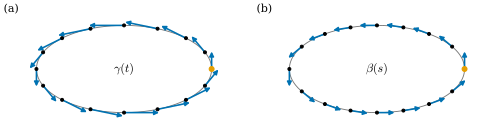

4.3 재매개화
이 절의 목표
- 재매개화를 정의하고, 방향을 보존하는 재매개화와 뒤집는 재매개화를 구분할 수 있다.
- 재매개화해도 자취, 정칙성, 접선은 변하지 않고 속도벡터만 \(h'\)배가 됨을 안다.
- 곡선의 길이가 재매개화에 무관함을 증명할 수 있다.
- 모든 정칙곡선을 호의 길이로 재매개화할 수 있음을 증명하고, 원, 나선, 현수선의 호의 길이 매개화를 구할 수 있다.
선수 지식
동기
예 4.2.8(a)에서 원을 한 번 도는 곡선과 두 번 도는 곡선은 자취가 같아도 길이가 달랐다. 그렇다면 한 번 돌되 두 배 빠르게 도는 곡선은 어떤가? \(\beta(u) = (r\cos 2u,\ r\sin 2u,\ 0)\), \(0 \le u \le \pi\)는 속력이 \(2r\)이므로 길이가 \(\int_0^\pi 2r\,du = 2\pi r\)이다. 빠르기는 달라도 같은 길을 한 번 지나면 길이는 같다.
이 관찰을 정확히 하려면 “같은 길을 빠르기만 바꾸어 지나간다”는 말을 정의해야 한다. 그것이 재매개화다. 이 절에서는 재매개화로 바뀌지 않는 것(자취, 정칙성, 접선, 길이)과 바뀌는 것(속도)을 가려낸다. 그리고 정칙곡선에는 가장 자연스러운 빠르기, 곧 “속력이 늘 \(1\)”인 매개화가 있음을 보인다. 이 매개화에서는 매개변수 자체가 지나온 길이를 잰다.

재매개화
정의 4.3.1 (재매개화, reparametrization). \(\gamma\colon I \to \R^3\)이 매개곡선이고 \(\tilde I\)가 열린구간이라 하자. 매끄러운 전단사 \(h\colon \tilde I \to I\)가 모든 \(u \in \tilde I\)에서 \(h'(u) \neq 0\)을 만족할 때, 매개곡선 \(\beta = \gamma \circ h\colon \tilde I \to \R^3\)을 \(\gamma\)의 재매개화(reparametrization)라 한다.
\(h\)는 새 매개변수 \(u\)를 옛 매개변수 \(t = h(u)\)로 바꾸는 함수다. \(\beta(u) = \gamma(h(u))\)는 “시각 \(u\)에 \(\gamma\)가 시각 \(h(u)\)에 있던 곳에 있다”는 뜻이다. \(\beta\)가 매끄러운 것은 명제 4.1.11(c) 때문이다. 보조정리 4.2.5에 의해 역함수 \(h^{-1}\colon I \to \tilde I\)도 매끄럽고 \((h^{-1})' = 1/(h' \circ h^{-1}) \neq 0\)이므로, \(\gamma = \beta \circ h^{-1}\)도 \(\beta\)의 재매개화다. 또 \(h_1, h_2\)가 조건을 만족하면 \((h_1 \circ h_2)' = h_1'(h_2)\,h_2' \neq 0\)이므로 재매개화의 재매개화는 재매개화다. 즉 “재매개화 관계”는 동치관계다. 2장의 말로 하면 \(h\)는 열린구간 사이의 미분동형사상(정의 2.3.1)이고, 1변수에서는 “\(h' \neq 0\)인 매끄러운 전단사”와 “미분동형사상”이 같은 말이다(예 2.3.11).
보조정리 4.2.5(a)에 의해 \(h'\)의 부호는 \(\tilde I\) 전체에서 일정하다. 그래서 재매개화는 두 종류로 나뉜다.
정의 4.3.2 (방향을 보존하는 재매개화와 뒤집는 재매개화). 정의 4.3.1에서 \(h' \gt 0\)이면 \(\beta\)를 방향을 보존하는 재매개화(orientation-preserving reparametrization), \(h' \lt 0\)이면 방향을 뒤집는 재매개화(orientation-reversing reparametrization)라 한다.
방향을 보존하는 재매개화는 같은 길을 같은 순서로, 방향을 뒤집는 재매개화는 거꾸로 지난다. 가장 단순한 방향을 뒤집는 재매개화는 \(h(u) = -u\)이다. 곡선 \(\gamma\colon I \to \R^3\)에 대하여 \(\bar\gamma(u) = \gamma(-u)\) (\(u \in -I = \{-t : t \in I\}\))를 \(\gamma\)의 반대 방향 곡선(reversed curve)이라 한다.
예 4.3.3. \(\gamma(t) = (r\cos t, r\sin t, 0)\)을 기준 예제의 원이라 하자.
- (a) \(h(u) = 2u\) (\(\R \to \R\))이면 \(h' = 2 \gt 0\)이고 \(\beta(u) = (r\cos 2u, r\sin 2u, 0)\)은 방향을 보존하는 재매개화다. 동기의 두 배 빠른 원이다.
- (b) \(h(u) = -u\)이면 \(\bar\gamma(u) = (r\cos u,\ -r\sin u,\ 0)\)은 원을 시계 방향으로 돈다. 방향을 뒤집는 재매개화다.
(c) 윗반원 \(\gamma|_{(0, \pi)}\)을 생각하자. \(h(x) = \arccos(x/r)\)는 \((-r, r)\)에서 \((0, \pi)\) 위로 가는 매끄러운 전단사이고 \(h'(x) = -1/\sqrt{r^2 - x^2} \lt 0\)이다. \(\sin\)은 \((0, \pi)\)에서 양수이므로 \(\sin(\arccos(x/r)) = \sqrt{1 - x^2/r^2}\)이고, 따라서
이다. 반원을 함수 \(\sqrt{r^2 - x^2}\)의 그래프로 쓰는 익숙한 매개화는 각으로 쓰는 매개화의 재매개화이고, 방향을 뒤집는다. 각 매개화는 \((r, 0)\) 쪽에서 \((-r, 0)\) 쪽으로 가고, 그래프 매개화는 그 반대로 가기 때문이다.
(d) 상수 \(c\)에 대하여 \(h(u) = u + c\)이면 \(\beta(u) = \gamma(u + c)\)는 방향을 보존한다. 시계의 영점을 옮긴 것에 해당한다.
검증: verify/v-4-3-reparametrization.py
비예 4.3.4. 정의의 두 조건(\(h' \neq 0\), 전단사)은 각각 필요하다.
(a) \(h(u) = u^3\)은 \(\R\)에서 \(\R\) 위로 가는 매끄러운 전단사이지만 \(h'(0) = 0\)이다. 역함수 \(t \mapsto t^{1/3}\)은 \(t = 0\)에서 미분가능하지 않다. (비예 2.3.3) 이런 \(h\)를 허락하면 정칙성이 깨진다. 정칙곡선 \(\gamma(t) = (t, t, 0)\)에 대해 \(\gamma(h(u)) = (u^3, u^3, 0)\)은 \(u = 0\)이 특이점이다(비예 4.2.3(b)).
(b) \(h(u) = u^2\) (\((-1, 1)\)에서 \([0, 1)\)로)은 단사가 아니고, 상이 열린구간도 아니다. \(\gamma(u^2)\)은 \(u\)가 \(-1\)에서 \(0\)까지 가는 동안 \(\gamma\)의 조각 \(\gamma([0, 1))\)을 거꾸로 지나고, \(0\)에서 \(1\)까지 가는 동안 다시 앞으로 지난다. 같은 길을 두 번 지나므로 길이가 두 배가 된다.
명제 4.3.5 (재매개화가 바꾸는 것과 바꾸지 않는 것). \(\beta = \gamma \circ h\)가 \(\gamma\)의 재매개화라 하자.
- (a) \(\beta'(u) = h'(u)\,\gamma'(h(u))\)이다.
- (b) \(\beta\)와 \(\gamma\)의 자취는 같다: \(\beta(\tilde I) = \gamma(I)\).
- (c) \(\beta\)가 정칙일 필요충분조건은 \(\gamma\)가 정칙인 것이다. 이때 \(u\)에서 \(\beta\)의 접선은 \(h(u)\)에서 \(\gamma\)의 접선과 같다.
- (d) \(\gamma\)가 정칙이면 \(\dfrac{\beta'(u)}{\abs{\beta'(u)}} = \pm\dfrac{\gamma'(h(u))}{\abs{\gamma'(h(u))}}\)이다. 부호는 \(h\)가 방향을 보존하면 \(+\), 뒤집으면 \(-\)이다.
증명. (a)는 명제 4.1.11(c)이다. (b) \(h\)가 전단사이므로 \(\{h(u) : u \in \tilde I\} = I\)이고, 따라서 \(\{\gamma(h(u))\} = \{\gamma(t) : t \in I\}\)이다. (c) (a)와 \(h'(u) \neq 0\)에서 \(\beta'(u) = 0 \iff \gamma'(h(u)) = 0\)이다. \(h\)가 전사이므로 모든 \(t \in I\)가 어떤 \(h(u)\)로 나타난다. 따라서 \(\beta\)에 특이점이 없을 필요충분조건은 \(\gamma\)에 특이점이 없는 것이다. 두 접선은 같은 점 \(\beta(u) = \gamma(h(u))\)를 지나고 방향벡터 \(\beta'(u)\)와 \(\gamma'(h(u))\)가 서로의 영이 아닌 상수배이므로 같은 직선이다. (d) (a)에서 \(\beta'/\abs{\beta'} = h'\gamma'(h)/(\abs{h'}\,\abs{\gamma'(h)})\)이고, \(h'/\abs{h'}\)는 \(h' \gt 0\)이면 \(1\), \(h' \lt 0\)이면 \(-1\)이다.
재매개화는 속도의 크기와 방향의 부호를 바꾼다. 그러니 속도에서 계산하는 양 가운데 재매개화로 바뀌지 않는 것을 찾는 것이 곡선의 기하를 찾는 일이다. 첫 번째가 길이다.
정리 4.3.6 (길이의 재매개화 불변성). \(\beta = \gamma \circ h\)가 \(\gamma\)의 재매개화이고 \([u_1, u_2] \subseteq \tilde I\)라 하자.
- (a) \(h\)가 방향을 보존하면 \(L(\beta|_{[u_1, u_2]}) = L(\gamma|_{[h(u_1), h(u_2)]})\)이고, 뒤집으면 \(L(\beta|_{[u_1, u_2]}) = L(\gamma|_{[h(u_2), h(u_1)]})\)이다.
- (b) 곡선 전체의 길이도 같다: \(L(\beta) = L(\gamma)\) (둘 다 \(\infty\)일 수 있다).
이 정리가 말하는 것. 길이는 “어느 길을 몇 번 지났는가”에만 달려 있고 얼마나 빨리 지났는지에는 무관하다. \(h([u_1, u_2])\)는 \(h\)가 증가하면 \([h(u_1), h(u_2)]\), 감소하면 \([h(u_2), h(u_1)]\)이므로, (a)는 한 문장으로 “\(\beta\)의 조각과 그에 대응하는 \(\gamma\)의 조각은 길이가 같다”이다.
증명 아이디어: 치환적분 \(t = h(u)\), \(dt = h'(u)\,du\)이다. 속력에는 \(\abs{h'}\)이 곱해지는데, \(h' \lt 0\)이면 적분의 위아래 끝이 뒤바뀌면서 부호가 상쇄된다.
증명. (a) 명제 4.3.5(a)에서 \(\abs{\beta'(u)} = \abs{h'(u)}\,\abs{\gamma'(h(u))}\)이다. \(h' \gt 0\)이면 치환적분 \(t = h(u)\)로
\[ L(\beta|_{[u_1, u_2]}) = \int_{u_1}^{u_2} \abs{\gamma'(h(u))}\,h'(u)\,du = \int_{h(u_1)}^{h(u_2)} \abs{\gamma'(t)}\,dt = L(\gamma|_{[h(u_1), h(u_2)]}) \]이다. \(h' \lt 0\)이면 \(\abs{h'} = -h'\)이고 \(h(u_2) \lt h(u_1)\)이므로
\[ L(\beta|_{[u_1, u_2]}) = -\int_{u_1}^{u_2} \abs{\gamma'(h(u))}\,h'(u)\,du = -\int_{h(u_1)}^{h(u_2)} \abs{\gamma'(t)}\,dt = \int_{h(u_2)}^{h(u_1)} \abs{\gamma'(t)}\,dt \]이다. (b) \(u_1\)이 \(\tilde I\)의 왼쪽 끝으로, \(u_2\)가 오른쪽 끝으로 가면, \(h\)가 \(\tilde I\)에서 \(I\) 위로 가는 단조 전단사이므로 \(h(u_1)\)과 \(h(u_2)\)는 \(I\)의 두 끝으로 간다(순서는 방향에 따라 바뀐다). (a)의 양변의 극한을 취하면 된다.
같은 계산에서 호의 길이 함수의 관계도 나온다. \(\beta\)의 호의 길이를 \(u_0\)에서, \(\gamma\)의 호의 길이를 \(h(u_0)\)에서 재면 \(s_\beta(u) = \pm s_\gamma(h(u))\)이다(부호는 방향). 호의 길이는 재매개화를 따라 그대로 옮겨 가고, 방향을 뒤집으면 부호만 바뀐다.
호의 길이 매개화
정의 4.3.7 (호의 길이 매개화, parametrization by arc length). 매개곡선 \(\gamma\colon I \to \R^3\)이 모든 매개변수 값에서 \(\abs{\gamma'} = 1\)을 만족하면 호의 길이로 매개화된 곡선(curve parametrized by arc length) 또는 단위속력 곡선(unit-speed curve)이라 한다.
이름의 이유는 이렇다. \(\abs{\gamma'} = 1\)이면 \(s_0\)에서 잰 호의 길이가 \(\int_{s_0}^{s} 1\,d\tau = s - s_0\)이다. 즉 매개변수의 차가 곧 지나온 길이다. 이런 곡선의 매개변수는 \(s\)로 쓴다. 단위속력 곡선은 자동으로 정칙이다.
예 4.3.8. (a) \(\abs{v} = 1\)이면 직선 \(\gamma(s) = p + sv\)는 단위속력이다. (b) \(\gamma(s) = (r\cos(s/r),\ r\sin(s/r),\ 0)\)은 \(\gamma'(s) = (-\sin(s/r), \cos(s/r), 0)\)이므로 단위속력이다. 기준 예제의 원 \((r\cos t, r\sin t, 0)\)은 속력이 \(r\)이므로 \(r = 1\)일 때만 단위속력이다. 반지름 \(r\)인 원을 따라 길이 \(s\)만큼 가면 중심각 \(s/r\)만큼 돈다는 것이 \(t = s/r\)의 뜻이다. (c) 나선 (4.1.3)은 \(a^2 + b^2 = 1\)일 때만 단위속력이다.
다음 정리가 이 절의 중심이다. 정칙곡선이면 언제나 단위속력으로 다시 매개화할 수 있다.
정리 4.3.9 (호의 길이 매개화의 존재와 유일성). \(\gamma\colon I \to \R^3\)이 정칙곡선이고 \(t_0 \in I\)이며 \(s(t) = \int_{t_0}^t \abs{\gamma'(\tau)}\,d\tau\)라 하자.
- (a) \(s\)는 매끄럽고 \(s' = \abs{\gamma'} \gt 0\)이며, \(s(I)\)는 \(0\)을 포함하는 열린구간이다.
- (b) \(h = s^{-1}\colon s(I) \to I\)는 방향을 보존하는 재매개화를 주고, \(\beta = \gamma \circ h\colon s(I) \to \R^3\)은 호의 길이로 매개화되어 있다. \(\beta(s)\)는 \(\gamma(t_0)\)에서 출발해 곡선을 따라 길이 \(s\)만큼 간 점이다.
- (c) \(\tilde\beta = \gamma \circ \tilde h\)가 \(\gamma\)의 재매개화이고 단위속력이면, 상수 \(c\)가 있어 \(\tilde h\)가 방향을 보존할 때 \(\tilde\beta(u) = \beta(u + c)\), 뒤집을 때 \(\tilde\beta(u) = \beta(-u + c)\)이다.
이 정리가 말하는 것. 정칙곡선은 언제나 “속력 1로 걷는” 방식으로 다시 그릴 수 있고, 그런 방식은 출발점과 방향을 고르는 자유를 빼면 하나뿐이다. 따라서 호의 길이 매개화에서 정의한 양은 곡선의 자취와 방향에만 달린 기하적인 양이 된다. 다음 절의 곡률이 그 첫 예다.
증명 아이디어: 호의 길이 함수 \(s(t)\)는 도함수가 속력이므로 순증가하고, 보조정리 4.2.5로 뒤집을 수 있다. 뒤집은 함수로 재매개화하면 연쇄법칙에서 속력이 \(\abs{\gamma'} \cdot (1/\abs{\gamma'}) = 1\)이 된다.
증명. (a) \(\gamma\)가 정칙이므로 \(\inner{\gamma'}{\gamma'}\)은 양수인 매끄러운 함수이고, \(\sqrt{\ }\)은 \((0, \infty)\)에서 매끄러우므로 \(\abs{\gamma'} = \sqrt{\inner{\gamma'}{\gamma'}}\)은 매끄럽다. 미적분학의 기본정리에서 \(s' = \abs{\gamma'} \gt 0\)이고, \(s'\)이 매끄러우므로 \(s\)도 매끄럽다. 보조정리 4.2.5에 의해 \(s(I)\)는 열린구간이고 \(s(t_0) = 0\)이다.
(b) 같은 보조정리에 의해 \(h = s^{-1}\)은 매끄러운 전단사이고 \(h'(\sigma) = 1/s'(h(\sigma)) = 1/\abs{\gamma'(h(\sigma))} \gt 0\)이다. 따라서 \(\beta = \gamma \circ h\)는 방향을 보존하는 재매개화이고, 명제 4.3.5(a)에서
\[ \abs{\beta'(\sigma)} = h'(\sigma)\,\abs{\gamma'(h(\sigma))} = \frac{\abs{\gamma'(h(\sigma))}}{\abs{\gamma'(h(\sigma))}} = 1 \]이다. \(\beta(\sigma) = \gamma(t)\)이고 \(s(t) = \sigma\)이므로 \(\beta(\sigma)\)는 \(\gamma(t_0)\)에서 길이 \(\sigma\)만큼 간 점이다.
(c) \(\tilde h\colon \tilde I \to I\)라 하고 \(k = s \circ \tilde h\colon \tilde I \to s(I)\)로 두자. \(k\)는 매끄러운 전단사이고 \(k' = s'(\tilde h)\,\tilde h' = \abs{\gamma'(\tilde h)}\,\tilde h'\)은 \(0\)이 아니며 \(\tilde h'\)과 부호가 같다. \(h \circ k = s^{-1} \circ s \circ \tilde h = \tilde h\)이므로 \(\tilde\beta = \gamma \circ h \circ k = \beta \circ k\)이다. 명제 4.3.5(a)에서 \(1 = \abs{\tilde\beta'(u)} = \abs{k'(u)}\,\abs{\beta'(k(u))} = \abs{k'(u)}\)이다. \(k'\)의 부호가 일정하므로 \(k' \equiv 1\) 또는 \(k' \equiv -1\)이고, 평균값 정리에 의해 \(k(u) = u + c\) 또는 \(k(u) = -u + c\)이다.
예 4.3.10 (나선의 호의 길이 매개화). 나선 \(\gamma(t) = (a\cos t, a\sin t, bt)\)의 속력은 \(c = \sqrt{a^2 + b^2}\)으로 일정하다. \(t_0 = 0\)에서 재면 \(s(t) = ct\), \(s(\R) = \R\), \(h(s) = s/c\)이므로
이다. 확인하면 \(\beta'(s) = \big(-\tfrac{a}{c}\sin\tfrac{s}{c},\ \tfrac{a}{c}\cos\tfrac{s}{c},\ \tfrac{b}{c}\big)\)이고 \(\abs{\beta'}^2 = (a^2 + b^2)/c^2 = 1\)이다. 이 재매개화가 단위속력임은 예 2.2.4에서도 확인했다. 새로운 것은 이것이 정리 4.3.9가 주는 바로 그 매개화라는 점이다. 5장에서 나선의 곡률과 비틀림률을 이 매개화로 계산한다. 원(\(b = 0\)을 허락한 경우)에서는 예 4.3.8(b)가 된다.
검증: verify/v-4-3-reparametrization.py
예 4.3.11 (현수선). \(\gamma(t) = (t, \cosh t)\)의 속력은 \(\cosh t\)이다(연습 4.2.2). \(t_0 = 0\)에서 재면 \(s(t) = \int_0^t \cosh\tau\,d\tau = \sinh t\)이고 \(s(\R) = \R\)이다. 역함수는 \(h(s) = \operatorname{arsinh} s = \log\big(s + \sqrt{1 + s^2}\big)\)이고, \(\cosh^2 - \sinh^2 = 1\)과 \(\cosh \gt 0\)에서 \(\cosh(\operatorname{arsinh} s) = \sqrt{1 + s^2}\)이다. 따라서
이다. 확인: \(\beta'(s) = \big(1/\sqrt{1 + s^2},\ s/\sqrt{1 + s^2}\big)\)이므로 \(\abs{\beta'(s)} = 1\)이다.
검증: verify/v-4-3-reparametrization.py
예 4.3.12 (타원: 식으로 풀 수 없는 경우). 타원 \(\gamma(t) = (2\cos t, \sin t)\)의 속력은 \(\abs{\gamma'(t)} = \sqrt{4\sin^2 t + \cos^2 t} = \sqrt{1 + 3\sin^2 t}\)이고,
이다. 이것은 타원적분이라 부르는 함수로, 다항식, 삼각함수, 지수함수 같은 익숙한 함수들을 유한 번 조합해서는 쓸 수 없다고 알려져 있다. 그래도 \(\gamma\)는 정칙이므로 정리 4.3.9에 의해 호의 길이 매개화 \(\beta = \gamma \circ s^{-1}\)이 존재한다. 수치적으로는 \(s(t)\)를 적분하고 \(s(t) = \sigma\)를 \(t\)에 대해 풀면 된다. 둘레는 \(L = s(2\pi) \approx 9.6884\)이다. 그림 4.3.1(b)가 이렇게 계산한 것이다.
검증: verify/v-4-3-reparametrization.py
요약
- 재매개화는 \(\beta = \gamma \circ h\)이다. 여기서 \(h\)는 매끄러운 전단사이고 \(h' \neq 0\)이다. \(h' \gt 0\)이면 방향을 보존하고 \(h' \lt 0\)이면 뒤집는다.
- 재매개화는 자취, 정칙성, 접선을 보존하고 속도를 \(h'\)배로 바꾼다. 단위접선의 방향은 방향을 뒤집을 때만 반대가 된다(명제 4.3.5).
- 곡선의 길이는 재매개화에 무관하다(정리 4.3.6).
- 정칙곡선은 호의 길이 \(s(t)\)의 역함수로 재매개화하면 단위속력이 되고, 이 매개화는 출발점과 방향을 빼면 유일하다(정리 4.3.9). 나선은 \(\beta(s) = (a\cos(s/c), a\sin(s/c), bs/c)\), \(c = \sqrt{a^2 + b^2}\)이다.
다음 절에서는 호의 길이로 매개화된 평면곡선의 속도벡터가 얼마나 빨리 도는지를 재어 부호곡률을 정의한다. 속력이 \(1\)이면 속도의 변화는 오직 방향의 변화이므로, 그 변화율이 곧 곡선이 휘는 정도다.
연습문제
연습 4.3.1 ★ 다음 \(h\colon \tilde I \to I\)가 재매개화를 주는지 판별하고, 준다면 방향을 보존하는지 뒤집는지 말하여라. (a) \(h(u) = \tan u\), \((-\pi/2, \pi/2) \to \R\) (b) \(h(u) = u^3\), \(\R \to \R\) (c) \(h(u) = e^u\), \(\R \to (0, \infty)\) (d) \(h(u) = 1/u\), \((0, \infty) \to (0, \infty)\) (e) \(h(u) = \sin u\), \((-\pi, \pi) \to [-1, 1]\)
풀이
(a) 준다. \(\tan\)은 \((-\pi/2, \pi/2)\)에서 \(\R\) 위로 가는 전단사이고 \(h' = 1 + \tan^2 u \gt 0\)이므로 방향을 보존한다.
(b) 주지 않는다. \(h'(0) = 0\)이다(비예 4.3.4(a)).
(c) 준다. \(e^u\)는 \(\R\)에서 \((0, \infty)\) 위로 가는 전단사이고 \(h' = e^u \gt 0\)이다. 방향을 보존한다.
(d) 준다. \(1/u\)는 \((0, \infty)\)에서 자기 자신 위로 가는 전단사(역함수도 \(1/u\))이고 \(h' = -1/u^2 \lt 0\)이다. 방향을 뒤집는다.
(e) 주지 않는다. \(\sin(\pi/4) = \sin(3\pi/4)\)이므로 단사가 아니고, \(h'(\pm\pi/2) = \cos(\pm\pi/2) = 0\)이다. 게다가 상 \([-1, 1]\)은 열린구간도 아니다(비예 4.3.4(b)와 같은 상황).
검증: verify/v-4-3-reparametrization.py
연습 4.3.2 ★ 원뿔 나선 \(\gamma(t) = (e^t\cos t,\ e^t\sin t,\ e^t)\) (\(t \in \R\))의 \(t_0 = 0\)에서 잰 호의 길이 \(s(t)\)를 구하고, 호의 길이 매개화 \(\beta(s)\)를 식으로 써라. \(\beta\)의 정의역은 무엇인가?
풀이
\(\gamma'(t) = e^t(\cos t - \sin t,\ \sin t + \cos t,\ 1)\)이고 \((\cos t - \sin t)^2 + (\sin t + \cos t)^2 = 2\)이므로 \(\abs{\gamma'(t)} = \sqrt3\,e^t\)이다. 따라서 \(s(t) = \int_0^t \sqrt3\,e^\tau\,d\tau = \sqrt3\,(e^t - 1)\)이다. \(t\)가 \(\R\)을 다 돌 때 \(s\)는 \((-\sqrt3, \infty)\)를 다 돈다. \(s = \sqrt3(e^t - 1)\)을 풀면 \(t = h(s) = \log(1 + s/\sqrt3)\)이고, \(w = 1 + s/\sqrt3\)으로 두면
\[ \beta(s) = \big(w\cos(\log w),\ w\sin(\log w),\ w\big), \qquad w = 1 + \frac{s}{\sqrt3},\quad s \in (-\sqrt3, \infty) \]이다.
검증: verify/v-4-3-reparametrization.py
연습 4.3.3 ★ \(\gamma\colon I \to \R^3\)이 단위속력 곡선이면 반대 방향 곡선 \(\bar\gamma(u) = \gamma(-u)\)도 단위속력이고 \(\bar\gamma'(u) = -\gamma'(-u)\)임을 보여라. 나선 (4.3.2)의 반대 방향 곡선을 식으로 써라.
풀이
\(h(u) = -u\)는 \(-I\)에서 \(I\) 위로 가는 매끄러운 전단사이고 \(h' = -1\)이다. 명제 4.3.5(a)에서 \(\bar\gamma'(u) = -\gamma'(-u)\)이므로 \(\abs{\bar\gamma'(u)} = \abs{\gamma'(-u)} = 1\)이다. 나선이면 \(\bar\beta(u) = \big(a\cos\frac{u}{c},\ -a\sin\frac{u}{c},\ -\frac{bu}{c}\big)\)이다(\(\cos\)은 짝함수, \(\sin\)은 홀함수). 위에서 보면 시계 방향으로 돌면서 \(b \gt 0\)이면 내려간다.
검증: verify/v-4-3-reparametrization.py
연습 4.3.4 ★ 참인지 거짓인지 판별하고 이유를 대어라. (a) 모든 매개곡선은 호의 길이로 재매개화할 수 있다. (b) 재매개화는 대응하는 조각의 길이를 바꾸지 않는다. (c) 정칙곡선의 호의 길이 매개화는 하나뿐이다. (d) 반대 방향 곡선은 원래 곡선의 재매개화다.
풀이
(a) 거짓. \(\gamma'(t_1) = 0\)이면 모든 재매개화 \(\beta = \gamma \circ h\)는 \(u_1 = h^{-1}(t_1)\)에서 \(\beta'(u_1) = h'(u_1)\gamma'(t_1) = 0\)이므로 단위속력일 수 없다. 예: 뾰족점 곡선 \((t^2, t^3)\)을 \(\R\) 전체에서 단위속력으로 재매개화할 수 없다.
(b) 참. 정리 4.3.6이다.
(c) 거짓. 출발점을 바꾼 \(\beta(s + c)\)와 방향을 바꾼 \(\beta(-s)\)도 호의 길이 매개화다. 다만 이것들이 전부다(정리 4.3.9(c)).
(d) 참. \(h(u) = -u\)가 정의 4.3.1의 조건을 만족한다.
연습 4.3.5 ★★ \(\gamma\)가 단위속력 곡선이고 \(\beta = \gamma \circ h\)가 그 재매개화이며 역시 단위속력이면, 상수 \(c\)가 있어 \(h(u) = u + c\) 또는 \(h(u) = -u + c\)임을 보여라.
풀이
명제 4.3.5(a)에서 \(1 = \abs{\beta'(u)} = \abs{h'(u)}\,\abs{\gamma'(h(u))} = \abs{h'(u)}\)이다. \(h'\)의 부호는 일정하므로(보조정리 4.2.5(a)) \(h' \equiv 1\) 또는 \(h' \equiv -1\)이다. 평균값 정리에 의해 \(h(u) - u\) 또는 \(h(u) + u\)가 상수다. (이것은 정리 4.3.9(c)에서 \(\gamma\) 자신이 이미 단위속력인 경우다.)
연습 4.3.6 ★★ \(\gamma_1 = \gamma|_{(0, 2\pi)}\), \(\gamma_2 = \gamma|_{(0, 4\pi)}\)이라 하자. 여기서 \(\gamma\)는 기준 예제의 원 (4.1.2)이다. \(\gamma_2\)가 \(\gamma_1\)의 재매개화가 아님을 두 가지 방법으로 보여라. (1) 길이를 써서. (2) 단사성을 써서.
풀이
(1) \(L(\gamma_1) = \int_0^{2\pi} r\,dt = 2\pi r\)이고 \(L(\gamma_2) = 4\pi r\)이다. \(\gamma_2 = \gamma_1 \circ h\)인 재매개화가 있다면 정리 4.3.6(b)에 의해 두 길이가 같아야 하므로 모순이다.
(2) \(\gamma_1\)은 단사다(\((0, 2\pi)\)에서 각이 서로 다르면 점이 다르다). \(h\)가 전단사이므로 \(\gamma_1 \circ h\)도 단사다. 그런데 \(\gamma_2(\pi/2) = \gamma_2(5\pi/2)\)이므로 \(\gamma_2\)는 단사가 아니다.
연습 4.3.7 ★★ 뾰족점 곡선을 \(t \gt 0\) 부분으로 제한한 \(\gamma(t) = (t^2, t^3)\), \(t \in (0, \infty)\)는 정칙이다. 호의 길이 \(s(t) = \int_0^t \abs{\gamma'(\tau)}\,d\tau\)(피적분함수는 \(\tau = 0\)까지 연속이므로 보통의 적분이다)와 그 역함수 \(h(s)\)를 식으로 구하여라. \(s \to 0^+\)일 때 \(h'(s)\)는 어떻게 되는가? 이것이 연습 4.3.4(a)와 어떻게 맞아떨어지는지 설명하여라.
풀이
(4.2.7)의 계산을 윗끝 \(t\)로 하면 \(s(t) = \big((4 + 9t^2)^{3/2} - 8\big)/27\)이고, \(s\)는 \((0, \infty)\)에서 \((0, \infty)\) 위로 가는 순증가 함수다. \(27s + 8 = (4 + 9t^2)^{3/2}\)에서 \(4 + 9t^2 = (27s + 8)^{2/3}\)이므로
\[ h(s) = \frac13\sqrt{(27s + 8)^{2/3} - 4}, \qquad s \gt 0 \]이다. \(h'(s) = 1/\abs{\gamma'(h(s))} = 1/\big(h(s)\sqrt{4 + 9h(s)^2}\big)\)이고 \(s \to 0^+\)이면 \(h(s) \to 0\)이므로 \(h'(s) \to \infty\)이다. 원점에 가까워질수록 곡선이 느려지므로, 속력을 \(1\)로 맞추려면 매개변수를 점점 더 빨리 돌려야 한다. 극한에서는 무한히 빨리 돌려야 하므로 \(t = 0\)(특이점)을 포함하는 구간으로는 단위속력 재매개화를 이어 갈 수 없다.
검증: verify/v-4-3-reparametrization.py
연습 4.3.8 ★★ \(A\)가 \(A^{\mathsf{T}}A = I_3\)(\(3 \times 3\) 단위행렬)인 \(3 \times 3\) 행렬(직교행렬)이고 \(c \in \R^3\)이며 \(\psi(p) = Ap + c\)라 하자. (a) 모든 \(v, w\)에 대하여 \(\inner{Av}{Aw} = \inner{v}{w}\)임을 보여라. (b) 매개곡선 \(\gamma\)에 대하여 \(\psi \circ \gamma\)의 속력과 호의 길이가 \(\gamma\)의 것과 같음을 보여라. (c) \(\beta\)가 \(\gamma\)의 호의 길이 매개화이면 \(\psi \circ \beta\)가 \(\psi \circ \gamma\)의 호의 길이 매개화임을 보여라.
풀이
(a) 열벡터로 쓰면 \(\inner{v}{w} = v^{\mathsf{T}}w\)이므로 \(\inner{Av}{Aw} = (Av)^{\mathsf{T}}(Aw) = v^{\mathsf{T}}A^{\mathsf{T}}Aw = v^{\mathsf{T}}w\)이다.
(b) \((\psi \circ \gamma)(t) = A\gamma(t) + c\)의 각 성분은 \(\gamma\)의 성분의 일차결합에 상수를 더한 것이므로 \((\psi \circ \gamma)' = A\gamma'\)이다. (a)에서 \(\abs{A\gamma'} = \abs{\gamma'}\)이므로 속력이 같고, 속력의 적분인 호의 길이도 같다.
(c) \(\beta = \gamma \circ h\)이면 \(\psi \circ \beta = (\psi \circ \gamma) \circ h\)는 \(\psi \circ \gamma\)의 재매개화이고, (b)에서 \(\abs{(\psi \circ \beta)'} = \abs{\beta'} = 1\)이다.
검증: verify/v-4-3-reparametrization.py (무작위 직교행렬로 수치 확인)